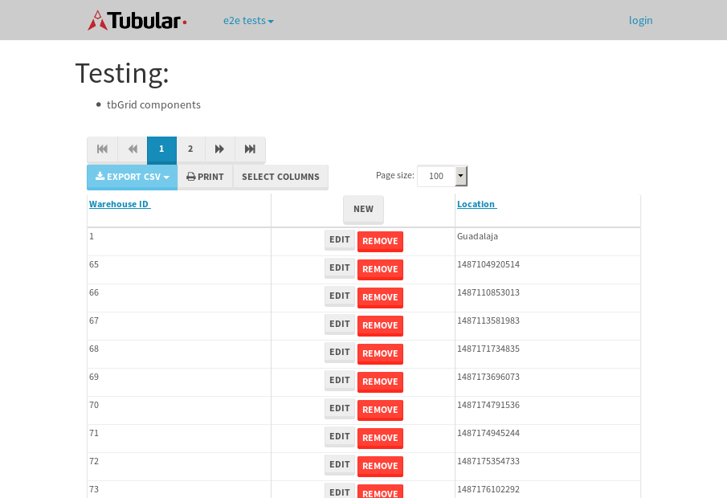
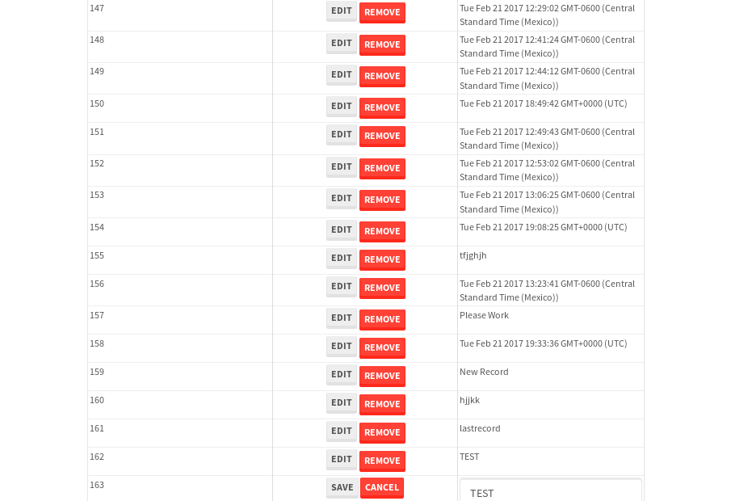

tbColumn.Grid Sorting - 27.284sTests: 5Skipped: 0Failures: 0 should sort data in ascending order then on descending order when sorting by Order Id column - 5.839sTests passed: 100.00%should order data in ascending order when click-sorting an unsorted text column - 4.961sTests passed: 100.00%should order data in descending order when click-sorting an ascending-sorted text column - 5.637sTests passed: 100.00%should order data in ascending order when click-sorting an unsorted date column - 5.328sTests passed: 100.00%should order data in descending order when click-sorting twice an unsorted date column - 5.518sTests passed: 100.00%
tbEmptyForm - 3.616sTests: 3Skipped: 0Failures: 1 should have an empty required field - 0.743sTests passed: 100.00%should not be able to click on save - 0.615sExpected null not to be null null.✗Tests passed: 50.00%should load default value for numeric field - 0.549sTests passed: 100.00%
Tubular Filters.tbColumnFilter - 107.905sTests: 12Skipped: 0Failures: 0 should cancel filtering when clicking outside filter-popover - 9.404sTests passed: 100.00%should disable Value text-input for "None" filter - 7.097sTests passed: 100.00%should disable apply button for "None" filter - 6.846sTests passed: 100.00%should decorate popover button when showing data is being filtered for its column - 11.916sTests passed: 100.00%should correctly filter data for the "Equals" filtering option - 8.201sTests passed: 100.00%should correctly filter data for the "Not Equals" filtering option - 8.233sTests passed: 100.00%should correctly filter data for the "Contains" filtering option - 8.203sTests passed: 100.00%should correctly filter data for the "Not Contains" filtering option - 8.364sTests passed: 100.00%should correctly filter data for the "Starts With" filtering option - 7.112sTests passed: 100.00%should correctly filter data for the "Not Starts With" filtering option - 7.096sTests passed: 100.00%should correctly filter data for the "Ends With" filtering option - 7.177sTests passed: 100.00%should correctly filter data for the "Not Ends With" filtering option - 7.246sTests passed: 100.00%
Tubular Filters.tbColumnDateTimeFilter - 136.627sTests: 12Skipped: 0Failures: 0 should cancel filtering when clicking outside filter-popover - 7.336sTests passed: 100.00%should disable Value text-input for "None" filter - 6.686sTests passed: 100.00%should disable apply button for "None" filter - 6.667sTests passed: 100.00%should clear filtering when clicking on Clean button - 17.858sTests passed: 100.00%should decorate popover button when showing data is being filtered for its column - 12.114sTests passed: 100.00%should correctly filter data for the "Equals" filtering option - 6.92sTests passed: 100.00%should correctly filter data for the "Not Equals" filtering option - 7.493sTests passed: 100.00%should correctly filter data for the "Between" filtering option - 12.349sTests passed: 100.00%should correctly filter data for the "Greater-or-equal" filtering option - 11.988sTests passed: 100.00%should corretlly filter data for the "Greater" filtering option - 12.359sTests passed: 100.00%should correctly filter data for the "Less-or-equal" filtering option - 11.953sTests passed: 100.00%should correctly filter data for the "Less" filtering option - 12.133sTests passed: 100.00%
Tubular Filters.tbColumnOptionsFilter - 81.973sTests: 3Skipped: 0Failures: 0 should cancel filtering when clicking outside filter-popover - 9.067sTests passed: 100.00%should decorate popover button when showing data is being filtered for its column - 12.2sTests passed: 100.00%should filter column-elements in accordance to the selected filter when selecting a single option - 49.552sTests passed: 100.00%
Tubular Filters.tbTextSearch - 49.45sTests: 5Skipped: 0Failures: 0 min-chars is not set - 1.146sTests passed: 100.00%should filter data in searchable-column customer name to matching inputted text, starting from 3 characters - 6.819sTests passed: 100.00%should filter data in searchable-column shipper city to matching inputted text, starting from 3 characters - 12.202sTests passed: 100.00%should show clear button when there is inputted text only - 7.513sTests passed: 100.00%should clear filtering when clicking clear button - 16.441sTests passed: 100.00%
tbForm related components.tbCheckboxField - 6.381sTests: 2Skipped: 0Failures: 0 should save changes on "SAVE" - 2.727sTests passed: 100.00%should discard changes on "CANCEL" - 2.228sTests passed: 100.00%
tbForm related components.tbDropDownEditor - 12.016sTests: 5Skipped: 0Failures: 0 should set initial input value to the value of "value" attribute when defined - 1.732sTests passed: 100.00%should show the component name value in a label field when "showLabel" attribute is true - 1.677sTests passed: 100.00%should show a help field equal to this attribute, is present - 1.758sTests passed: 100.00%should submit modifications to item/server when clicking form "Save" - 3.283sTests passed: 100.00%should NOT submit modifications to item/server when clicking form "Cancel" - 2.81sTests passed: 100.00%
tbForm related components.tbTextArea - 16.669sTests: 7Skipped: 0Failures: 0 should set initial input value to the value of "value" attribute when defined - 1.691sTests passed: 100.00%should be invalidated when the number of chars is not in the range of "min" and "max" attributes - 2.877sTests passed: 100.00%should show the component name value in a label field when "showLabel" attribute is true - 1.609sTests passed: 100.00%should show a help field equal to this attribute, is present - 1.902sTests passed: 100.00%should require the field when the attribute "required" is true - 1.901sTests passed: 100.00%should submit modifications to item/server when clicking form "Save" - 3.861sTests passed: 100.00%should NOT submit modifications to item/server when clicking form "Cancel" - 2.188sTests passed: 100.00%
tbForm related components.tbDateEditor - 14.829sTests: 6Skipped: 0Failures: 0 should set initial date value to the value of "value" attribute when defined - 1.723sTests passed: 100.00%should be invalidated when the date is not in the range of "min" and "max" attributes - 2.603sTests passed: 100.00%should show the component name value in a label field when "showLabel" attribute is true - 2.331sTests passed: 100.00%should show a help field equal to this attribute, is present - 1.89sTests passed: 100.00%should submit modifications to item/server when clicking form "Save" - 2.973sTests passed: 100.00%should NOT submit modifications to item/server when clicking form "Cancel" - 2.631sTests passed: 100.00%
tbForm related components.tbTypeaheadEditor - 15.754sTests: 7Skipped: 0Failures: 0 should show an options list when there is an API-info/component entered-data - 1.947sTests passed: 100.00%should select the option clicked - 2.18sTests passed: 100.00%should show a "delete" button when an option/match is selected, and delete the option if button is clicked - 2.229sTests passed: 100.00%should show a label value equal to the component name when "showLabel" attribue is true - 1.748sTests passed: 100.00%should require a value when "require" attribute is true - 1.949sTests passed: 100.00%should submit modifications to item/server when clicking form "Save" - 3.273sTests passed: 100.00%should NOT submit modifications to item/server when clicking form "Cancel" - 1.882sTests passed: 100.00%
tbForm related components.tbSimpleEditor - 21.954sTests: 9Skipped: 0Failures: 0 should set initial input value to the value of "value" attribute when defined - 2.82sTests passed: 100.00%should be invalidated when the number of chars is not in the range of "min" and "max" attributes - 2.305sTests passed: 100.00%should show the component name value in a label field when "showLabel" attribute is true - 1.609sTests passed: 100.00%should set input placeholder to the value of "placeholder" attribute - 2.158sTests passed: 100.00%should validate the control using the "regex" attribute, if present - 2.492sTests passed: 100.00%should show a help field equal to this attribute, is present - 1.781sTests passed: 100.00%should require the field when the attribute "required" is true - 2.001sTests passed: 100.00%should submit modifications to item/server when clicking form "Save" - 3.481sTests passed: 100.00%should NOT submit modifications to item/server when clicking form "Cancel" - 2.602sTests passed: 100.00%
tbForm related components.tbNumericEditor - 16.938sTests: 7Skipped: 0Failures: 0 should set initial component value to the value of "value" attribute when defined - 1.716sTests passed: 100.00%should be invalidated when the entered number is not in the range of "min" and "max" attributes - 2.283sTests passed: 100.00%should show the component name value in a label field when "showLabel" attribute is true - 2.149sTests passed: 100.00%should show a help field equal to this attribute, is present - 1.699sTests passed: 100.00%should require the field when the attribute "required" is true - 2.455sTests passed: 100.00%should submit modifications to item/server when clicking form "Save" - 3.784sTests passed: 100.00%should NOT submit modifications to item/server when clicking form "Cancel" - 2.157sTests passed: 100.00%
tbForm Connection Error NoModelKey - 2.896sTests: 1Skipped: 0Failures: 0 tbForm connection error functionality - 0.524sTests passed: 100.00%
tbForm Connection Error NoServerUrl - 3.206sTests: 1Skipped: 0Failures: 0 tbForm connection error functionality - 0.485sTests passed: 100.00%
tbGridComponents - 34.447sTests: 6Skipped: 0Failures: 4 should add item with newRow method - 4.889sExpected '163 EDIT REMOVE TEST' not to be '163 EDIT REMOVE TEST'.✗Tests passed: 50.00%should add item with newRow method and cancel action - 0.862sTests passed: 100.00%should update item with tbSaveButton - 2.134sExpected '' to be 'TEST'.✗Tests passed: 0.00%should NOT update item on cancel Update action - 1.17sFailed: ElementNotVisibleError✗Tests passed: 0.00%should remove item with tbRemoveButton - 21.837sExpected 100 not to be 100, 'should remove the row from the table'.✗Tests passed: 50.00%should NOT remove item on cancel Remove action - 1.113sTests passed: 100.00%
tbGridPager.navigation buttons - 9.036sTests: 1Skipped: 0Failures: 0 should perform no action when clicking on the numbered navigation button corresponding to the current-showing results page - 1.313sTests passed: 100.00%
tbGridPager.navigation buttons.first/non-last results page related functionallity - 3.779sTests: 2Skipped: 0Failures: 0 should disable "first" and "previous" navigation buttons when in first results page - 1.49sTests passed: 100.00%should enable "last" and "next" navigation buttons when in a results page other than last - 2.289sTests passed: 100.00%
tbGridPager.navigation buttons.last/non-first results page related functionallity - 3.944sTests: 2Skipped: 0Failures: 0 should disable "last" and "next" navigation buttons when in last results page - 2.134sTests passed: 100.00%should enable "first" and "previous" navigation buttons when in a results page other than first - 1.81sTests passed: 100.00%
tbGridPager.page navigation - 7.503sTests: 5Skipped: 0Failures: 0 should go to next results page when clicking on next navigation button - 1.461sTests passed: 100.00%should go to previous results page when clicking on previous navigation button - 1.965sTests passed: 100.00%should go to last results page when clicking on last navigation button - 1.368sTests passed: 100.00%should go to first results page when clicking on first navigation button - 1.443sTests passed: 100.00%should go to corresponding results page when clicking on a numbered navigation button - 1.264sTests passed: 100.00%
tbGridPagerInfo - 4.212sTests: 2Skipped: 0Failures: 0 should show text in accordance to numbered of filter rows and current results-page - 1.362sTests passed: 100.00%should show count in footer - 0.499sTests passed: 100.00%
tbHttp - 17.606sTests: 8Skipped: 1Failures: 1 should be authenticated - 2.996sTests passed: 100.00%retrieve data - 2.329sTests passed: 100.00%should not login bad credentials - 2.538sExpected '' to be 'false'.✗Tests passed: 0.00%should have a refresh token - 2.458sTests passed: 100.00%should remove authentication - 2.312sTests passed: 100.00%get method-Is not authenticated - 2.323sTests passed: 100.00%post method-Is not authenticated - 2.649sTests passed: 100.00%should regenerate access token on post - 0s***Skipped***Tests passed: 0%
tbPageSizeSelctor - 10.165sTests: 4Skipped: 0Failures: 0 should filter up to 10 data rows per page when selecting a page size of "10" - 2.169sTests passed: 100.00%should filter up to 20 data rows per page when selecting a page size of "20" - 1.835sTests passed: 100.00%should filter up to 50 data rows per page when selecting a page size of "50" - 2.616sTests passed: 100.00%should filter up to 100 data rows per page when selecting a page size of "100" - 2.058sTests passed: 100.00%
tbRowSelectable - 9.345sTests: 2Skipped: 0Failures: 0 selected rows - 4.936sTests passed: 100.00%unselected rows - 2.922sTests passed: 100.00%
tbSingleForm - 19.128sTests: 8Skipped: 1Failures: 0 should load correct info - 0s***Skipped***Tests passed: 0%should change customer name - 2.622sTests passed: 100.00%should save it - 3.053sTests passed: 100.00%should clear the inputs - 2.55sTests passed: 100.00%should update - 3.367sTests passed: 100.00%should reset editor - 2.389sTests passed: 100.00%should not save if not Changes - 2.724sTests passed: 100.00%should not be able to click on save - 2.422sTests passed: 100.00%


{kind=link}
{kind=link}